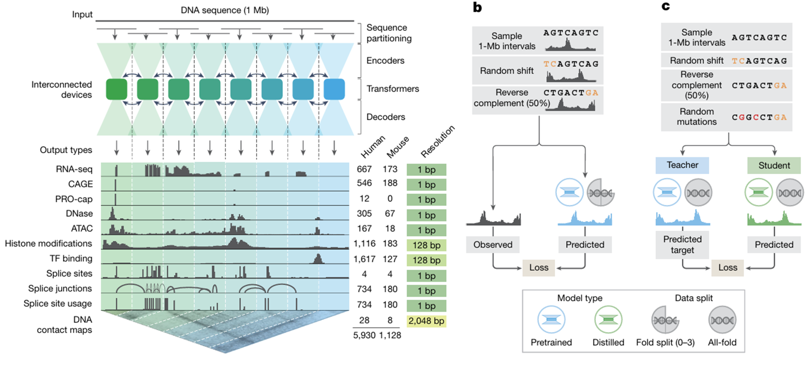
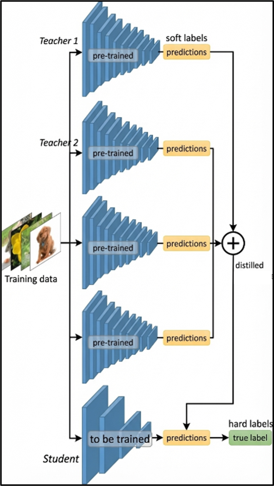

Figure 1 Panel B-C¶

패널 B-C는 AlphaGenome의 pretraining, fold split, 그리고 distillation이 어떻게 이어지는지를 한 흐름으로 보여줍니다. 먼저 패널 B는 여러 fold별 pretrained model을 학습하는 단계이고, 패널 C는 이렇게 얻은 teacher model들의 지식을 하나의 student model로 통합하는 단계입니다.
Panel B: pretraining과 fold split¶
패널 B는 AlphaGenome의 pretraining 단계를 요약한 그림입니다. 여기서 위쪽에 적힌 sample 1-Mb intervals는 실제 학습에 사용되는 1 Mb 길이의 DNA 입력 구간을 뜻합니다. 즉, 패널 A에서 보았던 것과 같은 형태의 긴 DNA 서열 window가 입력으로 들어가고, 각 구간에는 RNA-seq, CAGE, DNase, ATAC 같은 실제 실험 기반 functional genomics track이 정답(target)으로 대응됩니다.
그림 가운데의 Observed → Predicted → Loss 구조는 이 단계의 학습 목표를 보여줍니다. 즉, 입력 DNA sequence가 주어졌을 때 모델은 여러 genome track을 예측하고, 그 예측값이 실제 experimental signal과 최대한 가까워지도록 학습됩니다. 다시 말해, 이 단계는 “DNA sequence로부터 functional genomics signal을 복원하는 문제”로 볼 수 있습니다.
학습 과정에서는 두 가지 데이터 증강이 사용됩니다.
-
Random shift
입력 DNA 서열과 그에 대응하는 출력 track을 함께 조금씩 이동 (4%; 1,024bp) 시키는 방식입니다. 이렇게 하면 모델이 특정 절대 좌표 자체를 외우기보다는, 서열 패턴과 signal 사이의 상대적인 관계를 더 잘 학습하도록 유도할 수 있습니다. -
Reverse complement augmentation
입력 서열에 대해 50% 확률로 reverse complement를 적용하는 방식입니다. 이는 DNA가 실제로는 double-stranded molecule이라는 점을 반영하기 위한 것으로, 모델이 한 방향의 sequence representation에만 과도하게 의존하지 않도록 만드는 역할을 합니다.
그다음 핵심은 fold split 기반 학습입니다. 기본 아이디어는 reference genome을 여러 fold로 나눈 뒤, 그중 일부 genomic interval은 평가에만 사용하고 나머지 interval로 학습하는 것입니다. 즉, 어떤 구간이 validation/test에 사용되었다면, 그 구간은 해당 fold의 training에는 다시 들어가지 않습니다.
Supplementary explanation: how the fold split was actually defined
예시에서는 직관적으로 염색체 번호를 예시로 들며 “게놈을 몇 개의 구간으로 나누고, 그중 일부를 평가용으로 빼둔다” 정도로 이해해도 되지만, 실제 구현은 그보다 더 엄밀합니다. 큰 틀은 Borzoi와 유사합니다.
AlphaGenome은 fold split을 임의로 새로 만든 것이 아니라, Borzoi에서 미리 정의해 둔 cross-validation fold를 그대로 사용했습니다. 구체적으로는 human genome과 mouse genome을 각각 8개의 genomic section으로 나눈 뒤, 매 fold마다 그중 6개 section은 training, 1개는 validation, 1개는 test에 사용했습니다.
또 실제 평가 단위는 아무 위치에서 임의로 자른 window가 아니라, Borzoi에서 정의해 둔 약 196 kb 크기의 target interval입니다. 다만 AlphaGenome은 입력 문맥이 더 길기 때문에, 각 target interval 자체를 바로 넣는 것이 아니라 그 midpoint를 중심으로 1 Mb input window를 만들어 모델에 넣었습니다.
여기서 중요한 점은 data leakage 방지입니다. AlphaGenome은 1 Mb라는 긴 문맥을 보기 때문에, 겉으로는 서로 다른 split에 속한 interval이라도 실제 모델이 보는 입력 window는 서로 겹칠 수 있습니다. 그래서 저자들은 validation 또는 test interval의 1 Mb input window가 같은 fold의 training window와 조금이라도 overlap하면, 그 interval을 validation/test set에서 제외했습니다.
즉 실제 fold split은 단순히 “평가용 구간을 학습에서 뺀다” 수준이 아니라, 1 Mb receptive field까지 고려해서 train-validation-test 사이의 genomic overlap 가능성을 제거한 보수적인 region-level split이라고 이해하는 것이 더 정확합니다.
참고로 저자들은 이 fold-specific model들 외에도 all-folds model을 따로 학습했는데, 이 경우에는 8개 genomic section 전체를 모두 training에 사용했습니다. 다만 이 모델은 일반적인 genome track 성능 평가용이 아니라, 패널 C의 variant interpretation benchmark에만 사용되었습니다.
이 과정을 반복하면 fold별 pretrained model, 즉 여러 개의 teacher-like model이 만들어집니다. 각 모델은 서로 다른 held-out genomic region에 대해 평가되므로, 단순히 training set을 잘 외운 것이 아니라 unseen genome region에서도 예측이 가능한지를 점검할 수 있습니다.
Panel C: knowledge distillation¶
패널 C는 패널 B에서 학습한 여러 fold별 pretrained model(teacher)의 지식을, 실제 사용 가능한 단일 student model로 통합(distill)하는 과정을 보여줍니다. 여기서 distillation의 목적은 “단순 압축”이라기보다는, 여러 teacher가 가진 예측 패턴을 한 모델에 모아 예측의 일관성과 일반화(robustness)를 높이는 데 있습니다.
왼쪽에 표시된 Teacher는 패널 B에서 얻어진 fold별 pretrained model(또는 그 앙상블)을 의미합니다. Student는 최종적으로 배포/사용할 단일 모델입니다. 아래의 예시 그림으로 표현하면 다음과 같습니다. 우선 여러개의 Teacher model의 출력을 합한 logit 값을 생성 후, 더 작은 모델인 Student model이 이 logit값을 배우게 함으로써, 더 작은 모델에서도 여러개의 Teacher model을 합하여 사용하는 효과를 제공합니다.

패널 C의 핵심 흐름은 다음과 같습니다.
- 입력 서열(Sample 1-Mb interval)을 준비합니다.
- 입력 서열에 대해 augmentation을 Panel B와 동일하게 적용합니다.
- 그 다음 distillation 단계에서는 여기에 더해 random mutations를 추가로 섞습니다.
이는 “변이 정답을 직접적으로 주는 supervised 학습”이 아니라, 서열이 조금 바뀐 입력에서도 teacher의 반응(출력 변화)을 student가 함께 모방하게 만들기 위한 input perturbation입니다. - Teacher model이 변형된 입력에 대해 예측값(predicted target; soft label)을 생성합니다.
- Student model이 같은 입력에 대해 예측을 수행합니다.
- Student의 예측이 Teacher의 예측을 잘 따라가도록 loss를 최소화하며 학습합니다.
여기서 중요한 포인트는 random mutations의 목적입니다. 이것은 “변이 효과 정답(label)을 추가로 주고 직접적인 supervised로 학습한다”는 의미가 아니라, teacher가 변형 입력에 대해 내는 출력 자체를 목표치로 삼아(student가 모방) 학습한다는 뜻입니다.
즉, AlphaGenome은 변이 데이터에 대한 정답 label 없이도 변이 관련 반응을 학습할 수 있게 만든다는 것이 핵심입니다.
Supplementary explanation: why random mutations appear in distillation
변이 해석(variant effect prediction)은 결국 같은 구간에 대해 REF 서열과 ALT 서열을 각각 넣었을 때 예측이 어떻게 달라지는지(ALT − REF)를 보는 문제입니다.
그런데 student가 “원본 분포(REF 서열)”에서만 안정적으로 예측하고, 서열이 조금만 바뀌면 출력이 흔들린다면, ALT − REF 차이가 noisy해지고 변이 해석 성능이 떨어질 수 있습니다.
distillation 단계에서 random mutations를 섞으면 student는 단순히 “원본 서열의 정답을 맞추는 법”이 아니라, 서열이 바뀌었을 때 teacher가 출력이 어떻게 변하는지(teacher의 반응 함수)까지 함께 모방하게 됩니다.
저자들은 실제로 random mutation 없이 distillation을 수행하면 일부 변이 해석 지표(eQTL/sQTL 관련 benchmark 등)에서 student 성능이 떨어지는 현상을 보고하며, 이를 input perturbation 전략의 효과로 해석합니다.
“Predicted target(soft label)”이란 정확히 무엇인가?¶
패널 C의 “Predicted target”은 teacher가 만들어낸 예측 트랙 자체입니다. 즉, 여기서 soft label은 “클래스 확률” 같은 단순한 값이 아니라,
- RNA-seq / CAGE / DNase / ATAC 같은 1 bp resolution 트랙
- histone modification / TF binding 같은 128 bp resolution 트랙
- contact map 같은 2D 트랙
등을 포함한 연속적인 signal 예측값 전체가 됩니다. Student는 이 teacher 예측을 목표치로 삼아, 동일한 입력에서 teacher와 유사한 출력을 내도록 학습합니다.
패널 B-C는 AlphaGenome이 1 Mb interval 기반 pretraining + held-out fold split + knowledge distillation 구조로 학습된다는 점을 보여줍니다. 즉, 먼저 unseen genomic region에서도 일반화 가능한 teacher model들을 만들고, 이후 이들의 예측을 단일 student로 통합하면서 downstream variant effect prediction의 robustness까지 강화하는 구조입니다.